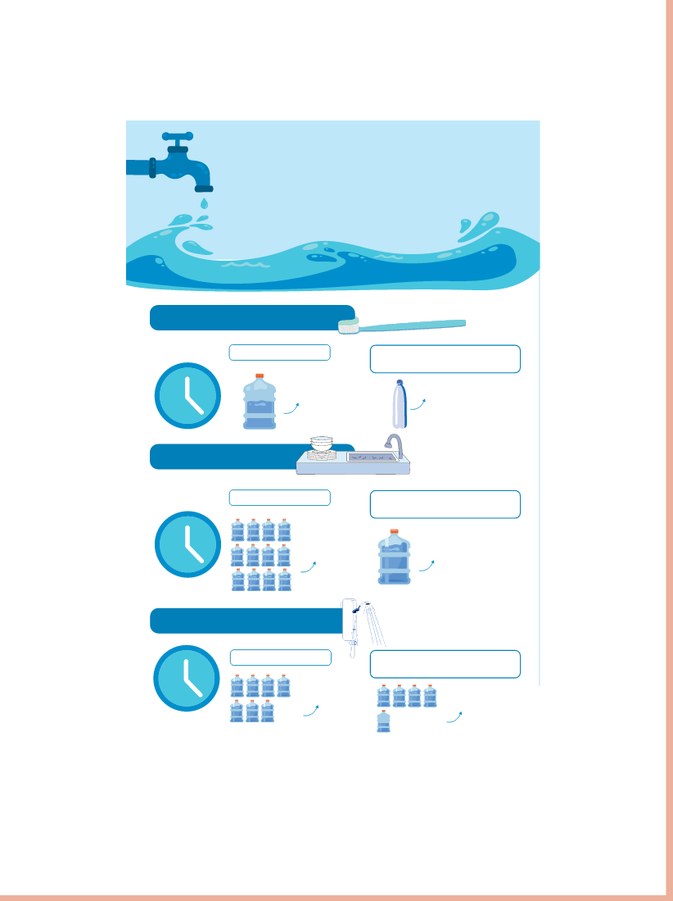

OBSERVE O INFOGRÁFICO A SEGUIIR, QUE MOSTRA ALGUNS EXEMPLOS DO CONSUMO DE ÁGUA.
DEPOIS, RESPONDA AO QUE SE PEDE.

Valéria Rezende
1)
QUANTOS LITROS DE ÁGUA PODEMOS ECONOMIZAR, APROXIMADAMENTE, AO ESCOVARMOS OS DENTES SEM DEIXAR A TORNEIRA ABERTA?
11 litros
ALGO A MAIS
Aprofunde o assunto com dados disponíveis no site da Agência Nacional de Águas e Saneamento Básico (ANA) (disponível em: https://www.gov.br/ana/pt-br, acesso em: 6 maio 2024).
USO DA ÁGUA NO DIA A DIA
ESCOVANDO OS DENTES
5 MINUTOS
TORNEIRA ABERTA
12 LITROS
CONTROLANDO A ABERTURA DA TORNEIRA
MENOS DE 1 LITRO
LAVANDO LOUÇA
15 MINUTOS
TORNEIRA ABERTA
MAIS DE 240 LITROS
CONTROLANDO A ABERTURA DA TORNEIRA
20 LITROS
BANHO DE CHUVEIRO
15 MINUTOS
CHUVEIRO ABERTO
140 LITROS
CONTROLANDO A ABERTURA DO CHUVEIRO
90 LITROS